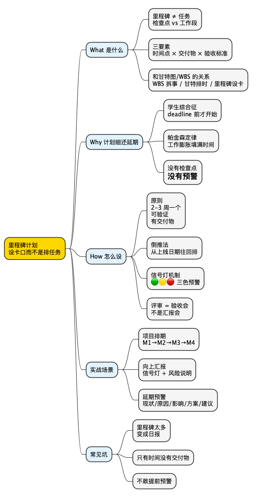

职场工具箱之里程碑计划：为什么你计划写得很细，还是会延期？
Posted on 二 10 3月 2026 in Method
| Abstract | 职场工具箱之里程碑计划：为什么你计划写得很细，还是会延期？ |
|---|---|
| Authors | Walter Fan |
| Category | Method |
| Version | v1.0 |
| Updated | 2026-03-06 |
| License | CC-BY-NC-ND 4.0 |
简短大纲
展开看看
- **扎心场景**：甘特图画得很漂亮，项目还是延期了——你的计划缺的不是"细度"，是"卡口" - **What**：里程碑计划是什么？里程碑 vs 任务的区别、三要素、和甘特图/WBS 的关系 - **Why**：为什么"计划很细"还会延期？学生综合征、帕金森定律、没有检查点 = 没有预警 - **How**：怎么设里程碑？原则 + 三个实战场景改写（❌ 无效版 vs ✅ 里程碑版）+ 对比表 + 常踩的坑 - **总结**：行动清单 + 思维导图 + 系列回顾 + 扩展阅读1. 甘特图画得比 PPT 还漂亮，项目还是延期了
这个场景你一定不陌生。
季度初，你花了整整两天画甘特图。任务拆到半天粒度，依赖关系用箭头连得密密麻麻，颜色分了四种，图例写了三行。领导看完说"不错，很专业"。
然后呢？
第三周，前端说"设计稿还没定稿"。第五周，后端说"接口改了三版，联调还没开始"。第七周，测试说"用例跑了一半，阻塞 bug 12 个"。
最后一周，所有人加班到凌晨两点，上线那天还是出了 P1 事故。
你复盘的时候，领导问了一句：
"为什么没有人提前告诉我？"
你心里委屈：我计划写得那么细，每个任务都排了，怎么还是延期？
我来告诉你答案：你排的是"任务"，不是"检查点"。
甘特图告诉你"谁在什么时候做什么"，但它不会告诉你"到这个时间点，我们应该交出什么东西、达到什么标准"。
任务可以"在做"，可以"做了一半"，可以"差不多了"——这些状态都是模糊的。而模糊，就是延期的温床。
你需要的不是更细的计划，而是更硬的卡口。
这个卡口，就叫里程碑（Milestone）。
2. What：里程碑计划到底是什么？
2.1 里程碑 ≠ 任务
先把这个最常见的误解掰清楚。
很多人把里程碑当成"一个比较重要的任务"。不是的。
小白提示：里程碑（Milestone） 这个词来自古罗马——罗马人在道路旁每隔一英里立一块石头，标记你走了多远。它不是"路"本身，而是路上的"刻度"。
| 任务（Task） | 里程碑（Milestone） | |
|---|---|---|
| 本质 | 一段工作 | 一个检查点 |
| 有没有时长 | 有（3 天、5 天） | 没有（是一个时间点） |
| 描述方式 | "开发用户登录模块" | "用户登录模块通过冒烟测试" |
| 状态 | 进行中 / 完成 | 达成 / 未达成（二值的） |
| 核心问题 | "谁在做什么" | "到这个点，我们交出了什么" |
你看出区别了吗？
任务是过程，里程碑是结果。任务可以"做了 80%"，里程碑只有"达到"或"没达到"——没有中间态。
这就是它的力量：它逼你用交付物说话，而不是用"进度百分比"糊弄。
2.2 里程碑的三要素：时间点 + 交付物 + 验收标准
一个合格的里程碑，必须同时具备三样东西：
- 时间点：哪一天？（不是"大概第三周"，是"3 月 20 日"）
- 交付物：交出什么？（不是"完成开发"，是"API 文档 + 可运行的 Demo + 单元测试覆盖率 > 80%"）
- 验收标准：怎么判断"过了"？（不是"差不多了"，是"冒烟测试全绿 + 性能基线达标 + 产品确认 UI 走查通过"）
缺任何一个，里程碑就是摆设。
- 只有时间点，没有交付物 → "到时间了，但不知道该交什么"
- 只有交付物，没有验收标准 → "交了，但不知道算不算合格"
- 只有验收标准，没有时间点 → "标准很高，但永远在路上"
我喜欢用一个公式来记：
里程碑 = 截止日期 × 交付物 × 验收标准
三者缺一，乘积为零。
小白提示：这里的"验收标准"在敏捷开发里有个专门的术语叫 DoD（Definition of Done）——"完成的定义"。后面系列文章会专门讲。简单说就是：团队提前约定好"什么叫做完了"，避免每个人心里的"完成"不一样。
2.3 里程碑和甘特图/WBS 是什么关系？
很多人以为里程碑计划是甘特图的替代品。不是的，它们是搭档。
- WBS（Work Breakdown Structure，工作分解结构）：把大项目拆成小任务——回答"要做哪些事"
- 甘特图：把任务排到时间轴上——回答"谁在什么时候做什么"
- 里程碑：在时间轴上钉几个钉子——回答"到这个点，我们应该站在哪里"
打个比方：WBS 是你的导航路线，甘特图是你的行车时刻表，里程碑是路上的收费站。
收费站不管你走的是高速还是国道，不管你中间停了几次服务区，它只问一个问题：你到了没有？
没到？那就得停下来搞清楚为什么，而不是继续往前开假装一切正常。
2.4 一个常见误解：敏捷团队不需要里程碑？
有人会说："我们跑 Scrum，每两周一个 Sprint，还需要里程碑吗？"
需要。
Sprint 是"节奏"，里程碑是"目标"。Sprint 告诉你"每两周交付一批 Story"，但它不告诉你"到第三个 Sprint 结束时，整个功能应该达到什么状态"。
你可以把里程碑理解为"跨 Sprint 的交付承诺"。Sprint 是战术节奏，里程碑是战略检查点。两者不矛盾，反而互补。
打个比方：Sprint 是你每天跑步的训练计划，里程碑是"第 4 周能跑完 10 公里""第 8 周能跑完半马"。你不会因为每天都在训练，就不设阶段性目标吧？
3. Why：为什么"计划很细"还会延期？
这是我被问得最多的问题。答案藏在三个人性规律里。
3.1 学生综合征：deadline 前才开始真正干活
你上学的时候，论文什么时候开始写的？
别装了，大概率是截止日期前三天。
这不是你懒，这是人性。心理学家 Eliyahu Goldratt（《关键链》的作者）把这个现象叫做学生综合征（Student Syndrome）：
不管你给多少提前量，人总是倾向于在最后期限前才开始认真投入。
你给一个任务排了 10 天，开发同学前 5 天可能在"调研""搭环境""看文档"——这些事当然有价值，但真正的核心编码可能从第 6 天才开始。
结果就是：前 5 天看起来"在做"，后 5 天才发现"来不及"。
里程碑怎么破？
在第 5 天设一个里程碑："核心接口定义完成 + Mock 数据可联调"。
如果第 5 天这个交付物拿不出来，你就知道后面 5 天大概率要出问题——而不是等到第 10 天才发现。
3.2 帕金森定律：工作会膨胀到填满所有可用时间
这条定律是英国历史学家 Cyril Northcote Parkinson 在 1955 年提出的：
Work expands so as to fill the time available for its completion. （工作会自动膨胀，直到填满分配给它的全部时间。）
你给一个任务排 3 天，它就会花 3 天。你给它排 5 天，它也会花 5 天——不是因为多出来的 2 天在做有价值的事，而是因为人会不自觉地"把事情做得更完美""多考虑一些边界情况""重构一下代码结构"。
这些事本身没错，但如果没有检查点，你根本不知道这 2 天是在"打磨"还是在"磨洋工"。
里程碑怎么破？
里程碑不关心你花了多少时间，它只关心你在约定的时间点交出了什么。它像一个闹钟：时间到了，拿东西出来。
3.3 没有检查点 = 没有预警
这是最致命的。
你的甘特图可能有 200 个任务，但如果中间没有检查点，那你的项目状态就是一个黑箱：
- 第 1 天：一切正常
- 第 30 天：一切正常
- 第 59 天：一切正常
- 第 60 天（上线日）：炸了
这不是夸张。我见过太多项目，前 80% 的时间都在"绿灯"，最后 20% 突然变"红灯"。
为什么？因为没有人在中间停下来问一句："到目前为止，我们真的交出了什么可验证的东西吗？"
里程碑就是那个"强制停车检查"的机制。它不让你在高速上一路狂奔到终点才发现轮胎早就爆了。
用代码的话说：你的项目跑了一个月的
while(true)循环，里面没有任何assert或checkpoint。等到最后segfault了，你才发现问题早在第三天就埋下了。
4. How：怎么设里程碑？
4.1 里程碑设置的三条原则
原则一：2-3 周一个，不多不少
太密（每 3 天一个）→ 变成了任务跟踪，失去了"检查点"的意义，团队疲于应付。
太疏（2 个月一个）→ 中间没有预警，等你发现问题已经来不及了。
经验值：2-3 周设一个里程碑，刚好是一个迭代周期，够你完成一个有意义的交付物，也够你在出问题时有时间调整。
原则二：必须可验证，不能是"完成 XX%"
"开发完成 80%"不是里程碑。"API 全部上线 + Postman 集合跑通 + 文档更新"才是。
验证的标准是：一个不了解项目细节的人，看到交付物，能判断"过了"还是"没过"。
如果需要你解释半天才能说清楚"为什么算完成了"，那这个里程碑的定义就有问题。
原则三：必须有交付物，不能只有时间点
"3 月 20 日"不是里程碑。"3 月 20 日，用户注册流程端到端可演示"才是。
时间点是骨架，交付物是肉。没有肉的骨架，立不住。
4.2 实战场景改写：三个你一定遇到过的情况
场景 1：项目排期——领导问"什么时候能上线"
❌ 无效版（领导内心 OS：你这是在念任务清单）
"我们计划第一周做需求评审，第二周到第四周开发，第五周联调，第六周测试，第七周上线。"
这段话的问题在哪？每一步都是"活动"，没有一步是"交付物"。领导听完只知道你"打算做什么"，不知道"到什么时候能看到什么东西"。
✅ 里程碑版（领导内心 OS：清楚了，我知道什么时候该来检查）
M1（3 月 14 日）需求冻结：PRD 终稿 + 技术方案评审通过 + 接口契约文档签字确认。验收标准：产品/开发/测试三方签字，此后需求变更走变更流程。
M2（3 月 28 日）核心链路可联调：用户注册→登录→下单 三个核心接口部署到 staging 环境，Mock 数据可跑通。验收标准：Postman 集合 30 个用例全绿，前后端可开始联调。
M3（4 月 11 日）功能完整可测试：全部功能开发完成，提测。验收标准：冒烟测试通过率 > 95%，P0/P1 bug 数 = 0，测试环境稳定运行 24 小时无崩溃。
M4（4 月 25 日）上线就绪：回归测试全部通过 + 灰度 5% 用户运行 48 小时 + 运维 checklist 签字。验收标准：灰度期间错误率 < 0.1%，性能基线达标，回滚方案验证通过。
你看出区别了吗？
每个里程碑都有三样东西：日期、交付物、验收标准。领导不需要看你的甘特图，只需要在这四个时间点来"验货"。
场景 2：向上汇报进度——领导问"现在进展怎么样"
❌ 无效版（领导内心 OS：你说的"差不多"到底是多少）
"开发进度大概 70%，联调还在进行中，测试下周开始。"
"大概 70%"是项目管理里最危险的三个字。因为从 70% 到 100%，可能比从 0% 到 70% 还要久——剩下的 30% 往往是最难的部分：边界情况、性能优化、联调 bug、环境问题……
✅ 里程碑版（领导内心 OS：清楚了，风险可控）
M1（需求冻结）✅ 已达成：3 月 14 日按时完成，无变更。
M2（核心链路可联调）✅ 已达成：3 月 28 日按时完成，Postman 30 个用例全绿。
M3（功能完整可测试）⚠️ 有风险：原计划 4 月 11 日，当前预计延期 2 天（原因：支付回调接口第三方变更，需要重新联调）。影响：测试开始时间顺延 2 天，但 M4 上线日期暂不受影响（测试团队已预留 buffer）。
M4（上线就绪）🟢 按计划：4 月 25 日，暂无风险。
这种汇报方式的好处是：领导一眼就能看到哪个里程碑亮了黄灯，风险有多大，需不需要介入。
不需要你解释"70% 是什么意思"，不需要你描述"联调进行中"到底是顺利还是卡住了。里程碑的状态就是最好的信号灯。
场景 3：延期预警——你发现要来不及了
❌ 无效版（领导内心 OS：你来报丧，我来背锅）
"项目可能要延期，因为需求变更太多了。"
这句话有三个问题：没有量化（延多久？）、没有原因分析（哪些变更？影响哪些模块？）、没有方案（怎么办？）。
✅ 里程碑版（领导内心 OS：问题清楚了，我来帮你协调）
M3（功能完整可测试）预计延期 5 天。
原因：需求冻结后新增了 3 个需求变更（#127 优惠券叠加规则、#134 地址簿改版、#141 支付超时重试），共增加约 8 人天工作量。其中 #127 影响核心下单链路，无法砍掉。
影响：M3 从 4 月 11 日推迟到 4 月 16 日。如果不做调整，M4 上线日期也会从 4 月 25 日推迟到 4 月 30 日。
方案：
- 砍 scope：把 #134 地址簿改版移到下个版本（省 3 人天），M3 只延期 2 天，M4 不受影响。
- 加人：从 B 组借 1 个后端 1 周（需要你协调），M3 按原计划完成。
- 接受延期：M4 推迟到 4 月 30 日，需要和运营同步活动时间。
我的建议：选方案 1，砍 #134。原因：地址簿改版不影响核心交易链路，延后风险最低。需要你拍板：是否同意砍 scope + 和产品同步。
你看，里程碑不只是"排计划"的工具，它还是"预警"和"谈判"的工具。
当你说"M3 要延期 5 天"，这比"项目可能要延期"精确一百倍。领导能立刻判断：这个延期能不能接受？需不需要我出手？
4.3 一张对比表：无效计划 vs 里程碑计划
| 维度 | 无效计划（常见） | 里程碑计划（更靠谱） |
|---|---|---|
| 颗粒度 | 任务级（"开发登录模块"） | 交付物级（"登录模块通过冒烟测试"） |
| 状态描述 | "进行中""差不多了""70%" | "达成 ✅ / 未达成 ❌ / 有风险 ⚠️" |
| 预警时机 | 上线前一天 | 里程碑未达成的那一天（提前 2-4 周） |
| 验收方式 | "你看一下代码" | 交付物 + 验收标准（可独立判断） |
| 沟通效率 | 需要解释半天 | 一张表看完全部状态 |
| 谈判筹码 | "我们尽力了" | "M3 延期 5 天，方案 1/2/3 选哪个" |
4.4 技术人常踩的三个坑
坑 1：里程碑太多，变成了任务跟踪
我见过有人把里程碑设到每 3 天一个，一个季度排了 20 个里程碑。
这不叫里程碑计划，这叫日报。
里程碑的价值在于"少而精"。它是路上的收费站，不是每隔 100 米的路灯。收费站太多，你大部分时间都在排队过站，而不是在赶路。
经验值：一个 2-3 个月的项目，4-6 个里程碑就够了。每个里程碑之间间隔 2-3 周。
坑 2：只有时间没有交付物
"3 月 20 日：开发阶段结束。"
这不是里程碑，这是日历提醒。
"开发阶段结束"是什么意思？代码写完了？代码 review 过了？单元测试跑过了？部署到测试环境了？每个人心里的"结束"不一样，到时候一定会吵架。
改法：把"开发阶段结束"改成具体的交付物——"全部接口部署到 staging + 单元测试覆盖率 > 80% + API 文档更新完成"。
坑 3：不敢提前预警
这是最要命的。
很多技术人有一种心态："再努力一下，说不定能赶上。"
于是里程碑快到了，明明已经有风险信号（联调卡住了、依赖方没交付、bug 数在涨），但你选择"再扛一扛"，不上报、不预警。
结果就是：里程碑当天才暴露问题，留给团队的调整时间为零。
里程碑的预警规则：
- 里程碑前 1 周，如果交付物完成度 < 70%，必须预警
- 预警不是"认输"，是"给团队争取调整时间"
- 预警的格式就用上面场景 3 的模板：现状 + 原因 + 影响 + 方案 + 建议
用代码的话说：里程碑就是你在关键路径上埋的
health check。你不会等到服务挂了才去看日志吧？你会设告警阈值，提前发现、提前处理。项目管理也一样。
我再多说一句。很多技术人觉得"我代码写得好就行了，项目管理是 PM 的事"。但现实是：你不设里程碑，别人就会替你设——而且设的位置你不一定喜欢。
与其被动接受一个不合理的 deadline，不如主动提出一组合理的里程碑。这不是在给自己加枷锁，而是在给自己争取"提前暴露问题"的权利。
5. 进阶：里程碑计划的几个实用技巧
5.1 用"倒推法"设里程碑
很多人设里程碑是"从前往后排"：先做什么、再做什么、最后做什么。
更好的方式是倒推：
- 先确定上线日期（M4）
- 上线前需要什么？→ 回归测试全过 + 灰度验证（M3）
- 测试前需要什么？→ 功能开发完成 + 提测（M2）
- 开发前需要什么？→ 需求冻结 + 技术方案确认（M1）
倒推的好处是：每个里程碑都是为下一个里程碑服务的，逻辑链条清晰，不会出现"做了一堆事但串不起来"的情况。
5.2 给里程碑加"信号灯"
我在团队里推行过一个简单的信号灯机制：
| 信号 | 含义 | 触发条件 |
|---|---|---|
| 🟢 绿灯 | 按计划推进 | 交付物完成度 > 80%，无阻塞 |
| 🟡 黄灯 | 有风险，需关注 | 交付物完成度 50%-80%，或有阻塞但有方案 |
| 🔴 红灯 | 大概率延期，需介入 | 交付物完成度 < 50%，或阻塞无方案 |
每周站会花 2 分钟过一遍信号灯，比看 200 行甘特图高效十倍。
5.3 里程碑评审会：不是汇报会，是验收会
很多团队把里程碑评审开成了"汇报会"：每个人讲讲自己做了什么，领导点点头，散会。
这不对。里程碑评审应该是验收会：
- 交付物拿出来，当场演示/检查
- 验收标准逐条过，过了打勾，没过记录
- 没过的条目，当场定责任人和补救时间
就像代码 review 不是"我给你讲讲我写了什么"，而是"你来看我的代码，告诉我哪里有问题"。
5.4 里程碑命名：别用"阶段一""阶段二"
我见过很多项目的里程碑长这样：
- M1：阶段一完成
- M2：阶段二完成
- M3：阶段三完成
这跟没命名一样。好的里程碑名字应该自带语义，让人一看就知道"到这个点，项目长什么样"。
| ❌ 模糊命名 | ✅ 语义化命名 |
|---|---|
| 阶段一完成 | 需求冻结 + 技术方案定稿 |
| 开发完成 | 核心链路端到端可演示 |
| 测试完成 | 回归全绿 + 灰度验证通过 |
| 上线 | 全量发布 + 监控告警就绪 |
好的命名就像好的函数名：processData() 不如 parseUserRegistrationForm()。里程碑也一样，名字越具体，团队的理解越一致。
6. 总结：里程碑计划的核心就一句话
不要只排任务，要设卡口。在关键节点强制验证，让延期在第二周被发现，而不是最后一天。
行动清单（下次排计划前自检）
- [ ] 我的计划里有没有里程碑？还是只有任务列表？
- [ ] 每个里程碑是否同时具备：时间点 + 交付物 + 验收标准？
- [ ] 里程碑间隔是否在 2-3 周？（太密 = 任务跟踪，太疏 = 没有预警）
- [ ] 里程碑的状态是否二值的？（达成/未达成，而不是"差不多"）
- [ ] 我有没有设预警机制？（里程碑前 1 周，完成度 < 70% 就预警）
- [ ] 里程碑评审是"汇报会"还是"验收会"？
- [ ] 延期时，我有没有用"现状 + 原因 + 影响 + 方案 + 建议"的格式汇报？
思维导图
@startmindmap
<style>
mindmapDiagram {
node { BackgroundColor #FAFAFA }
:depth(0) { BackgroundColor #FFD700 }
:depth(1) { BackgroundColor #E3F2FD }
:depth(2) { BackgroundColor #F5F5F5 }
}
</style>
* 里程碑计划\n设卡口而不是排任务
** What 是什么
*** 里程碑 ≠ 任务\n检查点 vs 工作段
*** 三要素\n时间点 × 交付物 × 验收标准
*** 和甘特图/WBS 的关系\nWBS 拆事 / 甘特排时 / 里程碑设卡
** Why 计划细还延期
*** 学生综合征\ndeadline 前才开始
*** 帕金森定律\n工作膨胀填满时间
*** 没有检查点\n= 没有预警
** How 怎么设
*** 原则\n2-3 周一个\n可验证\n有交付物
*** 倒推法\n从上线日期往回排
*** 信号灯机制\n🟢🟡🔴 三色预警
*** 评审 = 验收会\n不是汇报会
** 实战场景
*** 项目排期\nM1→M2→M3→M4
*** 向上汇报\n信号灯 + 风险说明
*** 延期预警\n现状/原因/影响/方案/建议
** 常见坑
*** 里程碑太多\n变成日报
*** 只有时间没有交付物
*** 不敢提前预警
@endmindmap

系列回顾
- 4D 总结法
- 黄金圈法则
- TNB 表达模型
- FAB 提案法
- STAR 面试法
- 同理心三方法
- 5W1H + 8C1D
- 艾森豪威尔矩阵
- PDCA 循环
- SMART 原则
- 领导力
- 逻辑树
- 解决问题五步法
- 5 个 Why
- 沟通四要素 CARE
- 金字塔原理
- 三点法
- DACI
- 四线复盘法
- RAPID
- 5S 问题处理法
- SWOT 自我定位
- AARRR 漏斗
- 第一性原理
- RACI
- 非暴力沟通
- SCAMPER
- MVP 思维
- ABC 情绪理论
- AI Agent 学职场英语
- 向上管理
- OODA 循环
- OKR
- MoSCoW 优先级
- RICE / ICE 评分
- 里程碑计划（本篇）
- 验收标准 DoD
- 范围管理
扩展阅读
- Eliyahu Goldratt, Critical Chain（关键链——项目管理小说，学生综合征和帕金森定律的经典出处）
- PMI, PMBOK Guide（项目管理知识体系指南，里程碑的"官方定义"）
- Mike Cohn, Agile Estimating and Planning（敏捷估算与规划——如何在敏捷环境下设里程碑）
- Wikipedia: Milestone (project management)
本作品采用知识共享署名-非商业性使用-禁止演绎 4.0 国际许可协议进行许可。